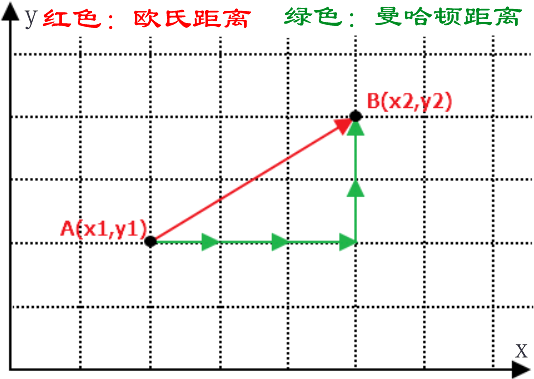
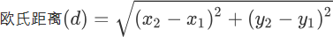
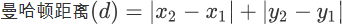
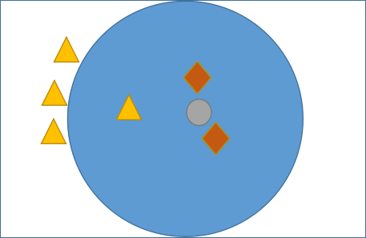

KNN最邻近分类算法
本节继续探机器学习分类算法——K 最近邻分类算法，简称 KNN（K-Nearest-Neighbor），它是有监督学习分类算法的一种。所谓 K 近邻，就是 K 个最近的邻居。比如对一个样本数据进行分类，我们可以用与它最邻近的 K 个样本来表示它，这与俗语“近朱者赤，近墨者黑”是一个道理。
在学习 KNN 算法的过程中，你需要牢记两个关键词，一个是“少数服从多数”，另一个是“距离”，它们是实现 KNN 算法的核心知识。
KNN 算法简单易于理解，无须估计参数，与训练模型，适合于解决多分类问题。但它的不足是，当样本不平衡时，如一个类的样本容量很大，而其他类样本容量很小时，有很能导致当输入一个新样本时，该样本的 K 个邻居中大容量类的样本占多数，而此时只依照数量的多少去预测未知样本的类型，就会可能增加预测错误概率。此时，我们就可以采用对样本取“权值”的方法来改进。
在学习 KNN 算法的过程中，你需要牢记两个关键词，一个是“少数服从多数”，另一个是“距离”，它们是实现 KNN 算法的核心知识。
KNN算法原理
为了判断未知样本的类别，以所有已知类别的样本作为参照来计算未知样本与所有已知样本的距离，然后从中选取与未知样本距离最近的 K 个已知样本，并根据少数服从多数的投票法则（majority-voting），将未知样本与 K 个最邻近样本中所属类别占比较多的归为一类。这就是 KNN 算法基本原理。在 scikit-learn 中 KNN 算法的 K 值是通过 n_neighbors 参数来调节的，默认值是 5。KNN 算法原理：如果一个样本在特征空间中存在 K 个与其相邻的的样本，其中某一类别的样本数目较多，则待预测样本就属于这一类，并具有这个类别相关特性。该方法在确定分类决策上只依据最邻近的一个或者几个样本的类别来决定待分样本所属的类别。
KNN 算法简单易于理解，无须估计参数，与训练模型，适合于解决多分类问题。但它的不足是，当样本不平衡时，如一个类的样本容量很大，而其他类样本容量很小时，有很能导致当输入一个新样本时，该样本的 K 个邻居中大容量类的样本占多数，而此时只依照数量的多少去预测未知样本的类型，就会可能增加预测错误概率。此时，我们就可以采用对样本取“权值”的方法来改进。
KNN算法流程
下面对 KNN 算法的流程做简单介绍。KNN 分类算法主要包括以下 4 个步骤：- 准备数据，对数据进行预处理 。
- 计算测试样本点（也就是待分类点）到其他每个样本点的距离（选定度量距离的方法）。
- 对每个距离进行排序，然后选择出距离最小的 K 个点。
- 对 K 个点所属的类别进行比较，按照少数服从多数的原则（多数表决思想），将测试样本点归入到 K 个点中占比最高的一类中。
注意：在机器学习中有多种不同的距离公式，下面以计算二维空间 A(x,y)，B(x1,y1) 两点间的距离为例进行说明，下图展示了如何计算欧式距离和曼哈顿街区距离。（PS:要理会名字，名字都是纸老虎）如下图所示：

在前面提到过欧氏距离，它表示两点之间最短的距离，其计算公式如下：

曼哈顿街区距离计算公式如下：

那么你会考虑它们两者的区别是什么呢？其实很容易理解，我们知道两点之前线段最短，A 和 B 之间的最短距离就是“欧式距离”，但是在实际情况中，由于受到实际环境因素的影响，我们有时无法按照既定的最短距离行进，比如你在一个楼宇众多的小区内，你想从 A 栋达到 B 栋，但是中间隔着其他楼房，因此你必须按照街道路线行进（图中红线），这种距离就被称作“曼哈顿街区距离”。
注意：除上述距离外，还有汉明距离、余弦距离、切比雪夫距离、马氏距离等。在 KNN 算法中较为常用的距离公式是“欧氏距离”。
KNN预测分类
通过上述介绍我们理解了 KNN 算法的基本工作流程，它主要利用“多数表决思想”与“距离”来达到分类的目的，那么我们应该如何确定 K 值呢？因为不同的 K 值会影响分类结果，如下所示：

图1：KNN算法分类核心
如图 1 所示，有三角形和菱形两个类别，而“灰色圆”是一个未知类别，现在通过 KNN 算法判断“灰色圆”属于哪一类。如果当 K 的取值为 3 时，按照前面讲述的知识，距离最近且少数服从多数，那“灰色圆”属于菱形类，而当 K= 6 时，按照上述规则继续判断，则“灰色圆”属于三角形类。
KNN 分类算法适用于多分类问题、OCR光学模式识别、文本分类等领域。
关注公众号「站长严长生」，在手机上阅读所有教程，随时随地都能学习。内含一款搜索神器，免费下载全网书籍和视频。

微信扫码关注公众号